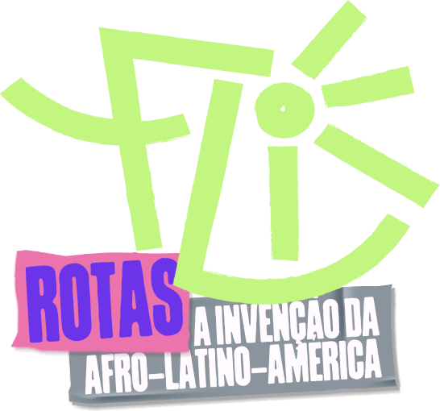
Carregando a programação...
Carregando autores...
Carregando mesas...
Carregando bate-papos...
Carregando atrações...
O FliParaíba é um encontro de literatura, música e diferentes manifestações culturais que ocupa o Centro Histórico de João Pessoa e reúne escritores, artistas e leitores em torno da diversidade e da produção cultural. Em sua terceira edição, o festival conta com 15 polos culturais, homenageando personalidades que fazem parte da nossa história e aproximando o público de diferentes expressões artísticas. O tema deste ano, “Rotas: A Invenção da Afro-Latino-América”, traz uma reflexão importante sobre nossas origens e sobre a riqueza cultural que nasce dos encontros entre diferentes povos. Valorizar essa história é também reconhecer a força da nossa identidade, dar visibilidade a vozes que ajudaram a construir quem somos e compreender que a diversidade é uma das nossas maiores riquezas. Acredito que a cultura precisa estar cada vez mais presente na vida das pessoas. É por meio dela que conhecemos melhor nossas origens, ampliamos nossos olhares e damos espaço a histórias e vozes que ajudam a construir quem somos. É essa Paraíba, que valoriza sua identidade, reconhece sua diversidade e mantém suas portas abertas ao mundo, que queremos fortalecer.
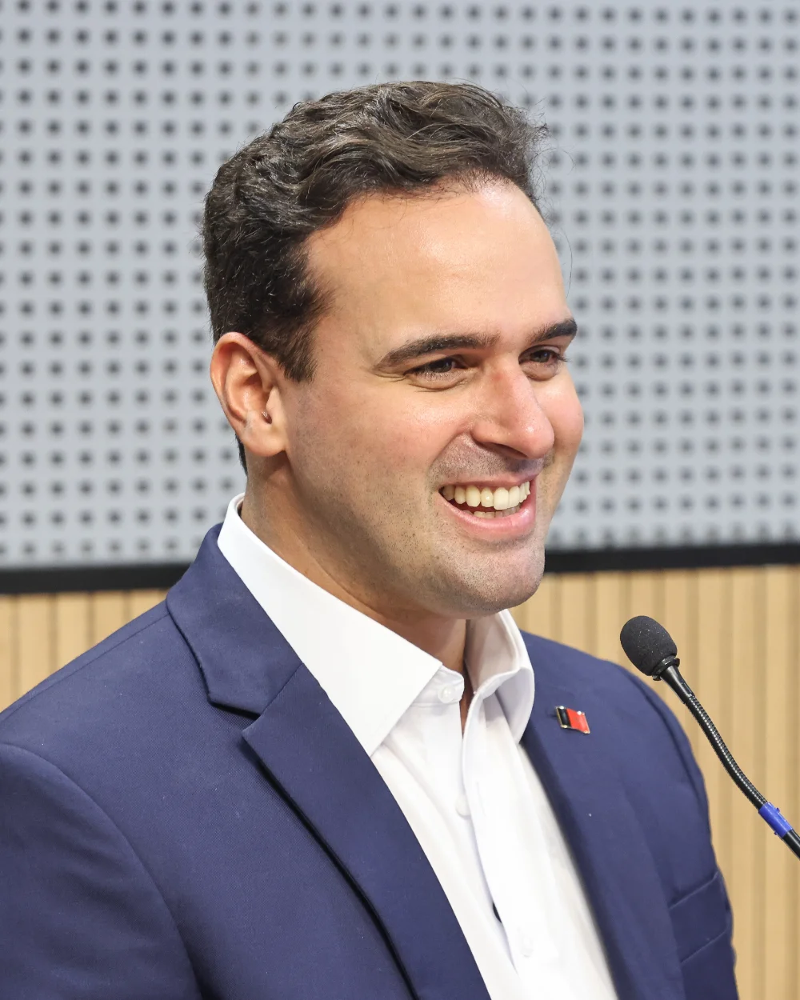
Governador do Estado da Paraíba
Socorro Acioli escreveu que “o tempo de sonhar é em cima da terra”. É preciso sonhar, portanto, sonhar como quem inventa: não para recusar o real, mas para agir sobre ele, disputar suas possibilidades e imaginar aquilo que ainda pode existir. A curadoria da terceira edição da FliParaíba, “Rotas: a invenção da Afro-Latino-América”, parte dessa ideia de utopia em meio às distopias de ontem, de hoje e, possivelmente, de amanhã. No meio dos destroços, há nós. O festival conta com trinta participantes de dez países, distribuídos em seis mesas temáticas e quatro bate-papos. Mas, como em toda curadoria, as faltas podem ser tão destacadas quanto as presenças, e aqui houve uma escolha deliberada: no contexto brasileiro, pensar um mundo-Nordeste. Com algumas exceções como Leda Maria Martins e Cidinha da Silva, nomes que, na minha leitura, não poderiam estar ausentes dessa conversa sobre a experiência afro-latino-americana no Brasil, a maioria dos convidados nacionais desta edição partem do Nordeste. Sei das ausências, das tantas autorias e parcerias de outras regiões que poderiam estar conosco, mas às vezes a pisada que nos identifica precisa ser grande o bastante para produzir efeito. Esse recorte existe como resposta a tudo aquilo que sabemos, mas que nem sempre precisamos nomear outra vez. Se o autonomeado centro foi durante tanto tempo autorizado a imaginar o país, interessa agora perguntar o que acontece quando mudamos o ponto de onde o país é imaginado. Como escreve a poeta Gisela Casimiro: “Pantera negra prende / a verdade entre as garras, / afia a História com os dentes.” Os dentes que temos, devemos usá-los. A invenção de que falamos é feita de mordidas e ganas, de memória e linguagem, de corpos que tomam para si o direito de recontar a história antes contada pelo colonizador, ocupando a cidade, criando linguagens e imaginando futuros. “Hoy nos sentimos más libres y podemos contar las monstruosidades que nos rodean”, disse María Fernanda Ampuero. Liberdade é romper o molde. Inventar. É tudo nosso. Vamos pensar África, América Latina e Nordeste não como territórios homogêneos, mas lugares heterogêneos atravessados por conflitos, diásporas e permanências. João Pessoa será o ponto de encontro dessas rotas e, ao menos por três dias, será o começo de tudo: do que criamos e do que ainda seremos. Porque, se conseguimos inventar, existe.
Curador da 3ª edição da FliParaíba
Durante os dias 27, 28 e 29 de novembro de 2025, o Centro Cultural São Francisco recebeu o 2º Festival Literário Internacional da Paraíba (FLIParaíba).
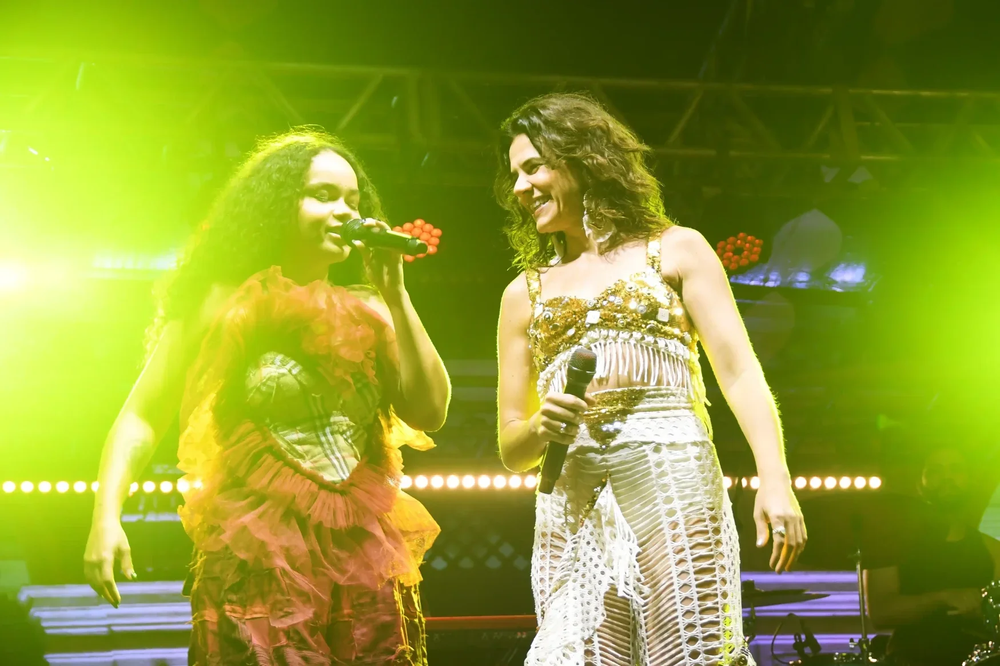
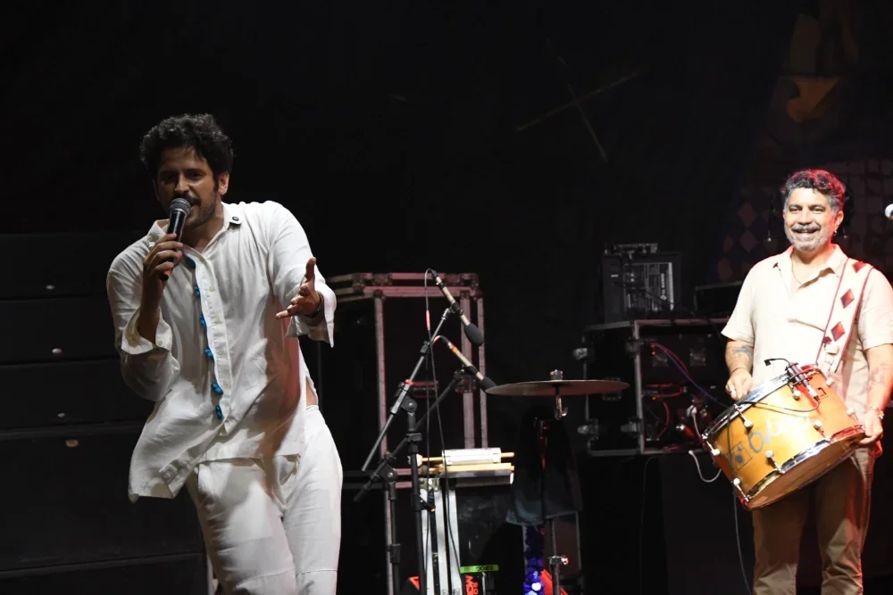
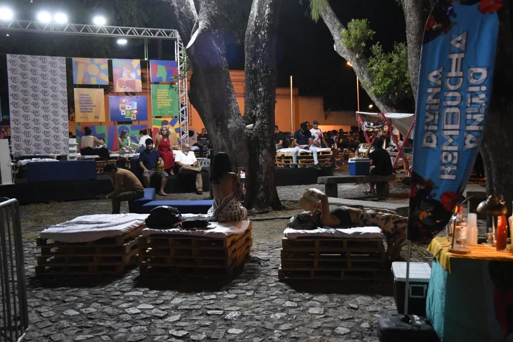
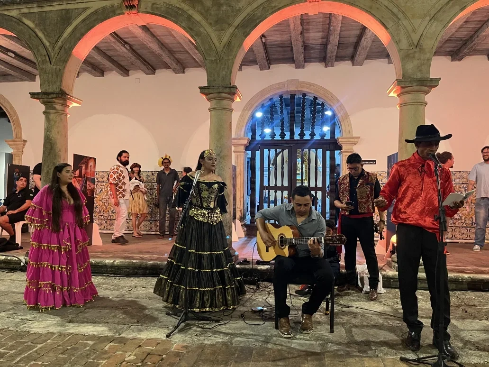
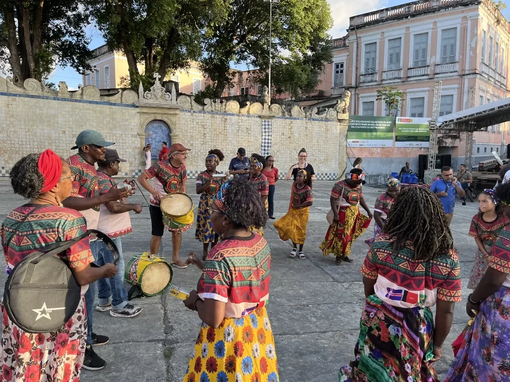
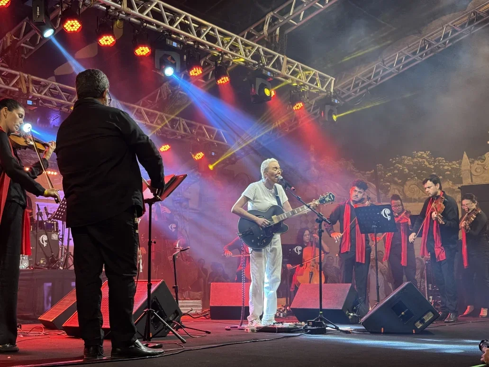
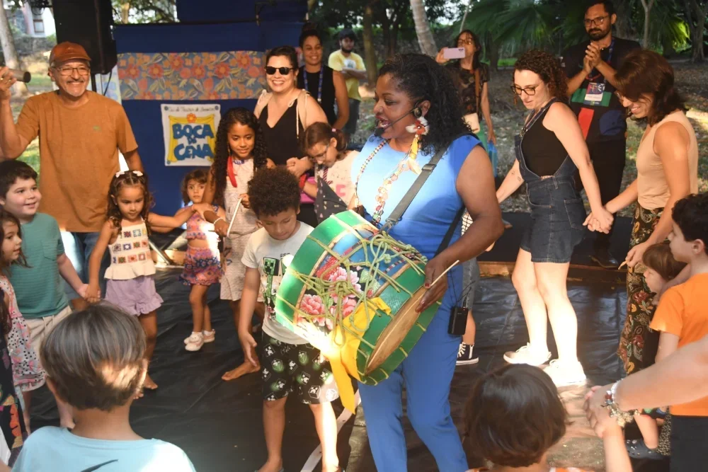
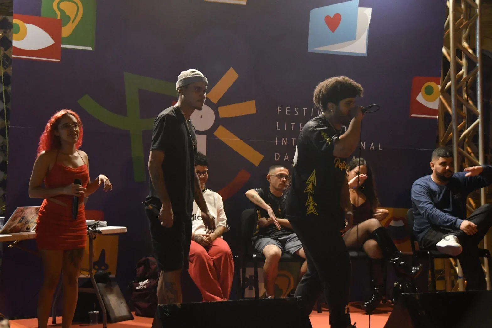
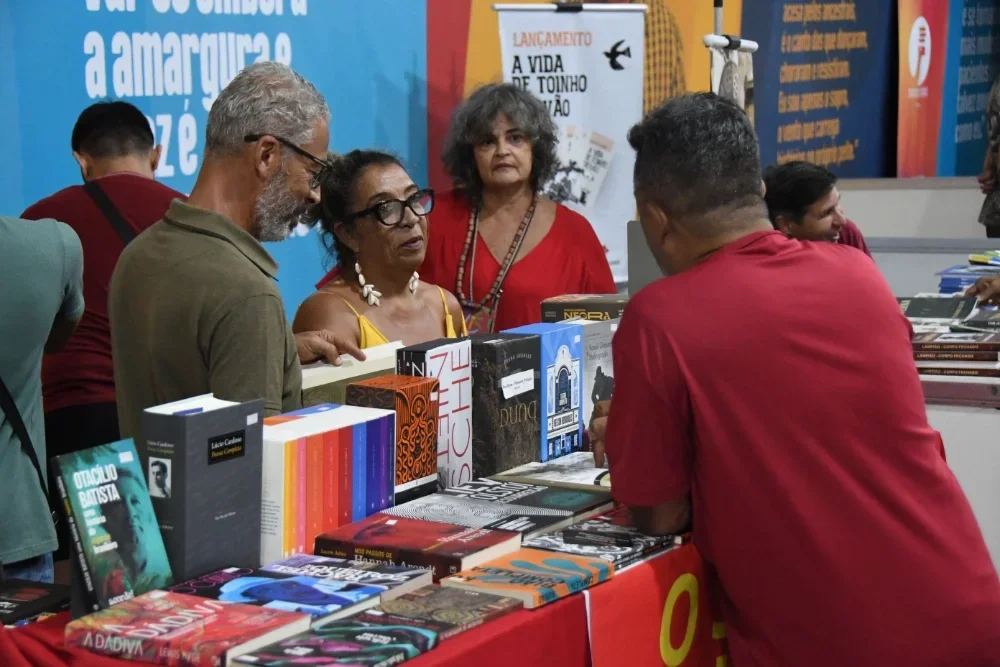
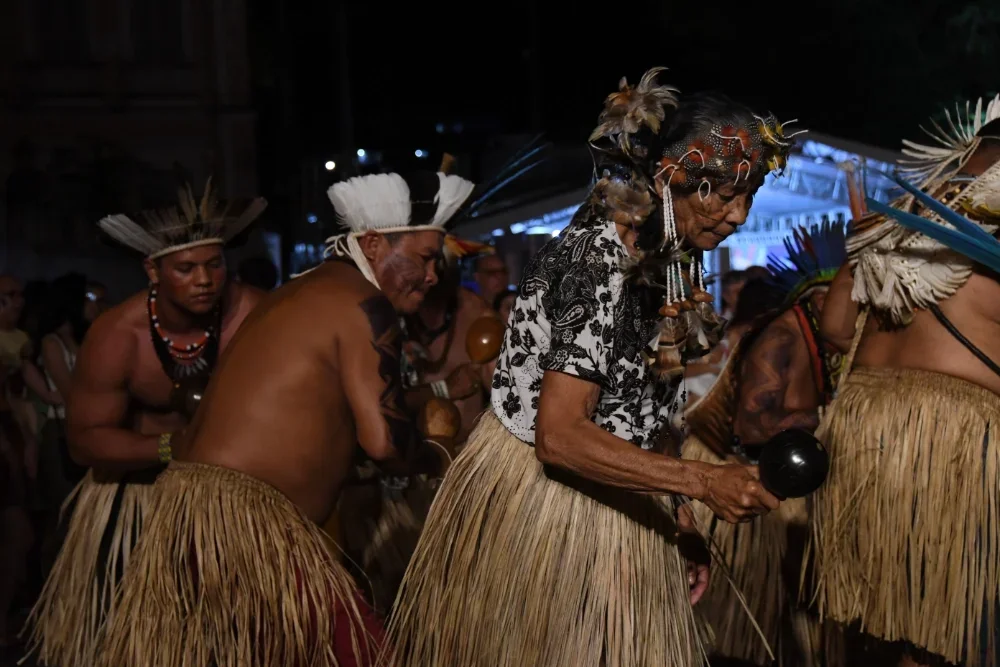
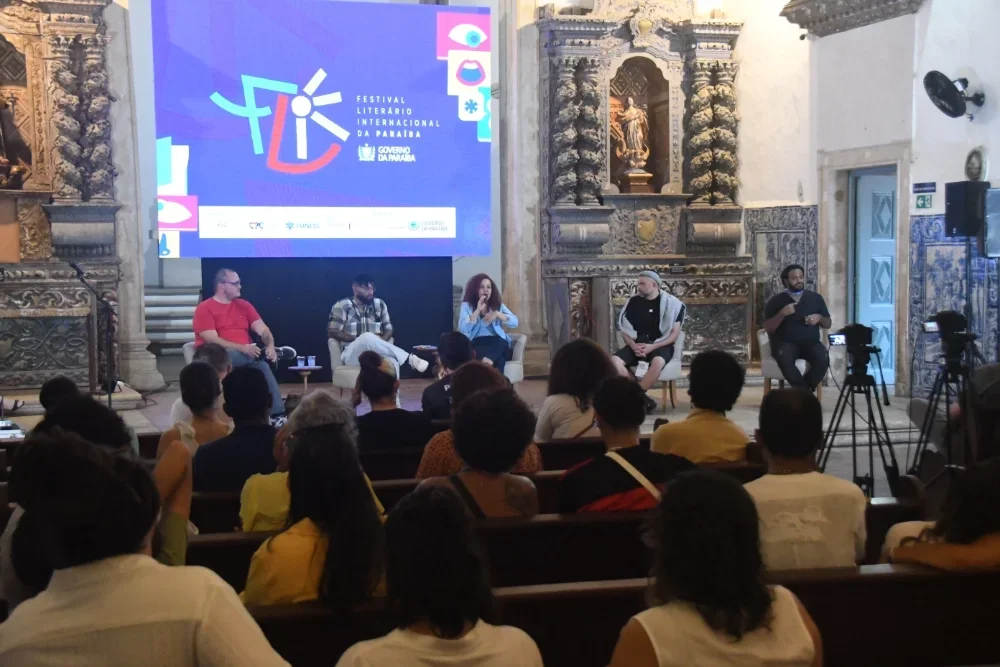
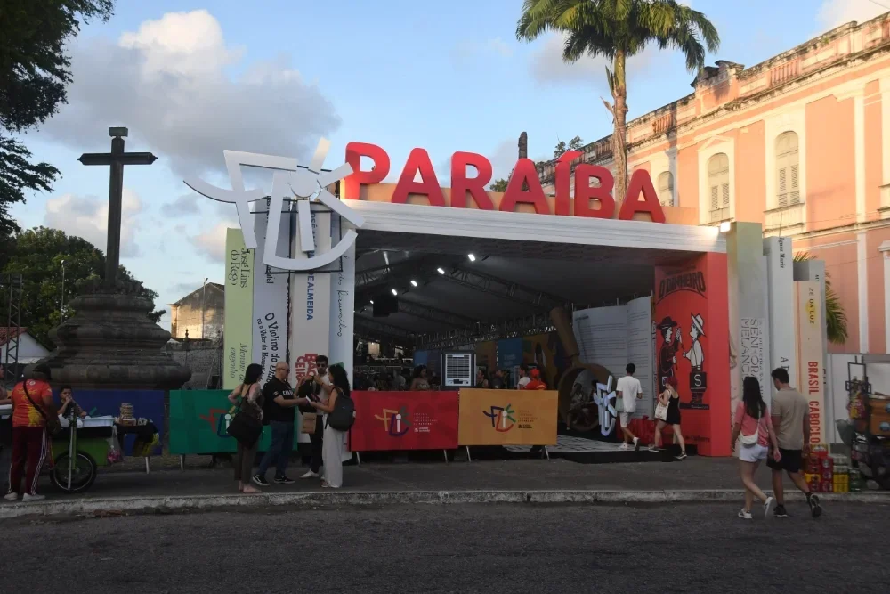
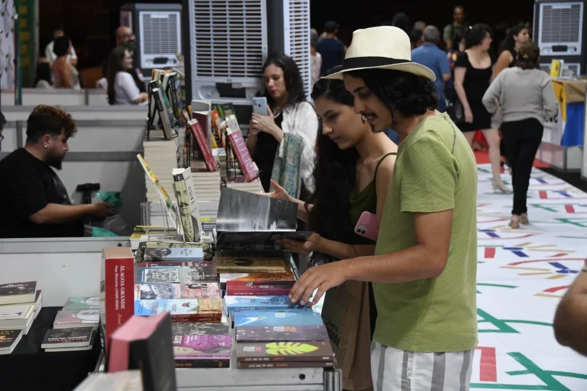
Com o tema Nossa Língua, Nossa Gente - Ancestralidade, Identidade e o Futuro da Democracia, o festival reuniu literatura, música, debates, artes e manifestações das comunidades tradicionais, levando mais de 18 mil pessoas ao Centro Histórico de João Pessoa.
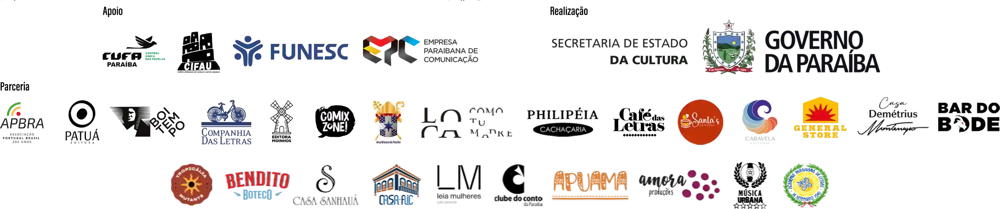